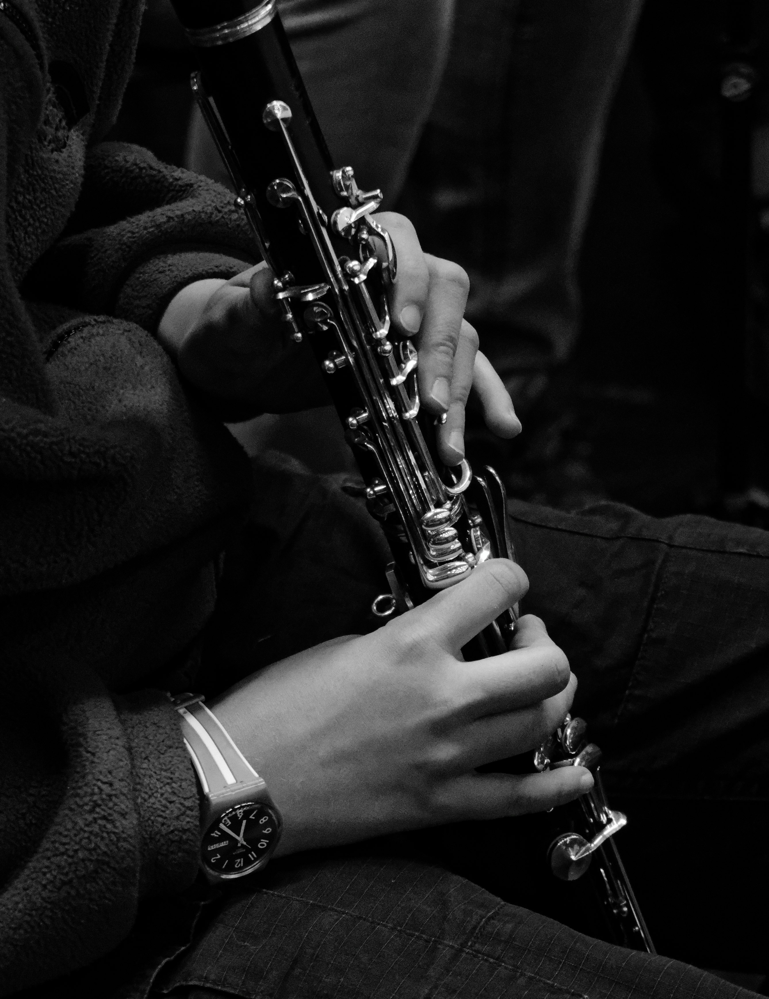

Clarinet
The clarinet is a single-reed woodwind instrument renowned for its exceptionally wide expressive range and famously fluid tone. Its versatile sound can blend seamlessly into the warm textures of an orchestra or stand out as a brilliant, agile solo voice.
How it makes sound
Sound is produced when the player blows air through a mouthpiece, causing a single cane reed, which is secured by a metal or leather ligature, to vibrate. This vibration sets the air column inside the instrument's dense wooden or synthetic body into motion.
Unlike the conical saxophone or oboe, the clarinet features a mostly cylindrical bore. Because of this acoustic property, the clarinet overblows at the twelfth rather than the octave. Pressing the register key raises the pitch by an octave and a perfect fifth, navigating the acoustic break between its distinct ranges.
The player's fingers operate an intricate system of metal keys, rings, and tone holes that change the effective length of the air column. By adjusting breath support and embouchure, the player shifts through the instrument's three distinct registers: the dark, woody chalumeau (low), the bright, singing clarion (middle), and the piercing altissimo (high).
History and development
The clarinet was invented around 1700 by German instrument maker Johann Christoph Denner, who modified an earlier single-reed folk instrument called the chalumeau. By adding a register key, Denner unlocked the instrument's upper range, allowing it to sing with a clear, trumpet-like voice (which gave the "clarion" register its name).
Early clarinets had only a few keys and required complex cross-fingerings. In the late eighteenth century, composers like Wolfgang Amadeus Mozart championed the instrument's expressive capabilities, cementing its permanent place in the symphony orchestra. By the mid-nineteenth century, makers adapted the Boehm system of keys and rings—originally developed for the flute—to the clarinet, vastly improving its technical agility and intonation.
The instrument's unparalleled dynamic control and portability helped it flourish in diverse musical traditions worldwide. Beyond classical orchestras and military bands, it became the expressive, wailing soul of Eastern European klezmer music, as well as a leading solo voice during the jazz and swing eras.
Today, the clarinet family encompasses instruments of many sizes, most notably the B-flat soprano and the deeper, resonant bass clarinet, remaining a vital and versatile force across all genres.

Listening details
- Registers: Listen for the dramatic shift in tone color between the dark, hollow low notes and the bright, singing middle register.
- Dynamics: The instrument can achieve an almost silent whisper (pianissimo) and swell to a piercing volume, offering immense dynamic control.
- Agility: Modern keywork allows the player to execute rapid, liquid runs and arpeggios across the instrument's exceptionally wide range.
Instrument profile
Further reading is available from Encyclopaedia Britannica's clarinet entry.
Back to woodwinds